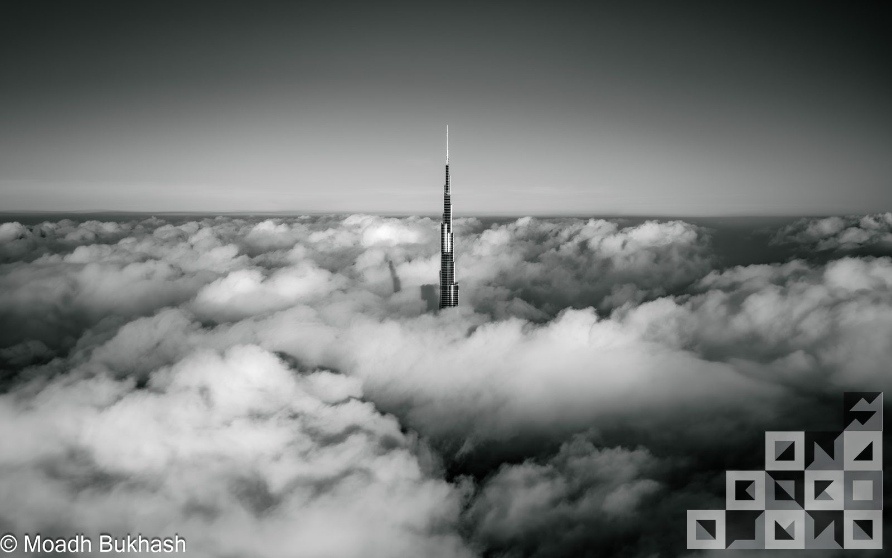
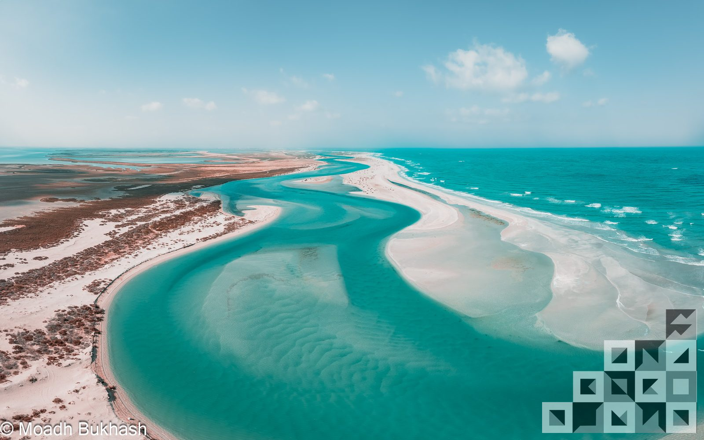

— 01
Frame, then fill.
The image is the subject. Every system element — type, rule, mark — exists to frame the photograph, never to compete with it. The pattern recedes when the picture appears.
 Brand System
Brand System
The bio reads — I, a universe of atoms, an atom in the universe. Not a flourish, an instruction. The work is a record of moving between those two readings — close enough to see the grain, far enough to see the geometry.

The first instinct was not to make pictures, but to confirm them.
Aerial work confirmed something a body on the ground only suspects — that the desert is patterned; that a coastline draws a line; that the world organises itself when you step back far enough. The camera became the tool because nothing else holds the proof.
Based in Dubai. The work travels.
Two scales, taken together, become a single way of looking.
Zoom out until a person becomes geometry — a tiny figure on a dune is a comma in a sentence the desert is writing.
Zoom in until a coastline becomes a brushstroke — a satellite-eye of a reef is a single stroke of negative space against the deep.
The brand mark mirrors what the photographs do: a small block of geometry which, repeated, becomes terrain. Form follows subject. The system was built to recede so the proof can speak.

The visual system, the writing voice, the sequencing of work — all derive from these three. Return to them when a choice feels unclear.
The image is the subject. Every system element — type, rule, mark — exists to frame the photograph, never to compete with it. The pattern recedes when the picture appears.
The monogram, the grid, the rules — all geometric. Aerial work reveals pattern in the world; the identity reveals pattern in itself. There is no ornament. There is only structure clear enough to look like decoration.
Negative space is not the absence of content; it is content. Generous margins, quiet pages, long pauses between lines. The world is loud enough already.
Scale demands new ground. The work is built on motion through the world — each location its own composition; each return a test that the system holds across geographies.
The bio's geography names a city. The work's geography names a year.
Three things never appear. Their absence is part of the brand.
Every frame is a real one, made when the world was already arranging itself. The motion of a piece is borne out of the music it sits in. There is no posing, no setup, no second take.
The brand carries no portrait of the maker, no name in the frame. The camera is the perspective; the photographer disappears behind it. Other people in the work appear as scale markers, never as portraits.
The image is the message. Words around it stay considered, technical, brief — the place, the hour, the paper, the edition. Nothing more. See the Voice page.
Read the rest of the system as a single instruction: get out of the way of the picture.